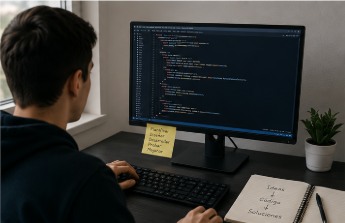

Desarrollo web
Creación de páginas web utilizando HTML para estructurar el contenido y CSS para trabajar posteriormente en su presentación visual.
Algunos de los conocimientos y trabajos desarrollados durante mi formación en Ingeniería de Sistemas.
Durante mi formación académica he realizado diferentes actividades y proyectos que me han permitido aplicar los conocimientos aprendidos en clase.
Creación de páginas web utilizando HTML para estructurar el contenido y CSS para trabajar posteriormente en su presentación visual.
Desarrollo de ejercicios y soluciones mediante programación, buscando aplicar la lógica y resolver diferentes problemas.
Trabajo con bases de datos para almacenar, organizar y consultar información de diferentes sistemas.
Algunas de las habilidades que he desarrollado o continúo fortaleciendo durante mi formación son:

Estas son algunas de las áreas que forman parte de mi proceso académico.
| Área | ¿Qué he aprendido? | Aplicación |
|---|---|---|
| Programación | Fundamentos de lógica y desarrollo de soluciones mediante código. | Ejercicios y proyectos académicos. |
| Desarrollo web | Estructuración de páginas mediante HTML y conceptos básicos de diseño web. | Creación de páginas y portafolios. |
| Bases de datos | Organización, almacenamiento y consulta de información. | Sistemas de información. |
| Trabajo en equipo | Organización de actividades y comunicación con otros integrantes. | Proyectos académicos. |
Durante mi proceso académico he tenido contacto con diferentes tecnologías y herramientas que me han permitido ampliar mis conocimientos.
Antes de comenzar un proyecto considero importante comprender el problema y organizar las actividades necesarias para desarrollar una solución.
Las pruebas permiten identificar errores y comprobar que una solución funcione de acuerdo con lo esperado.
Una buena organización permite distribuir mejor las actividades y llevar un seguimiento del proceso de desarrollo.
A medida que avance en mi formación quiero realizar proyectos que me permitan aplicar los conocimientos adquiridos y aprender nuevas herramientas.
También me interesa desarrollar soluciones que puedan responder a necesidades reales y que tengan una utilidad práctica.
La experiencia obtenida en cada proyecto será parte importante de mi crecimiento profesional.